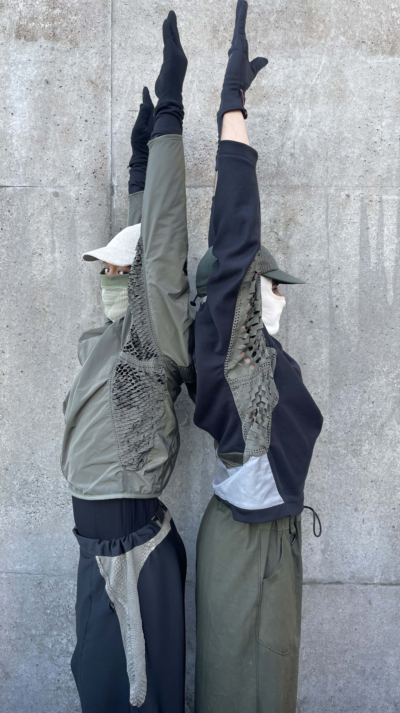
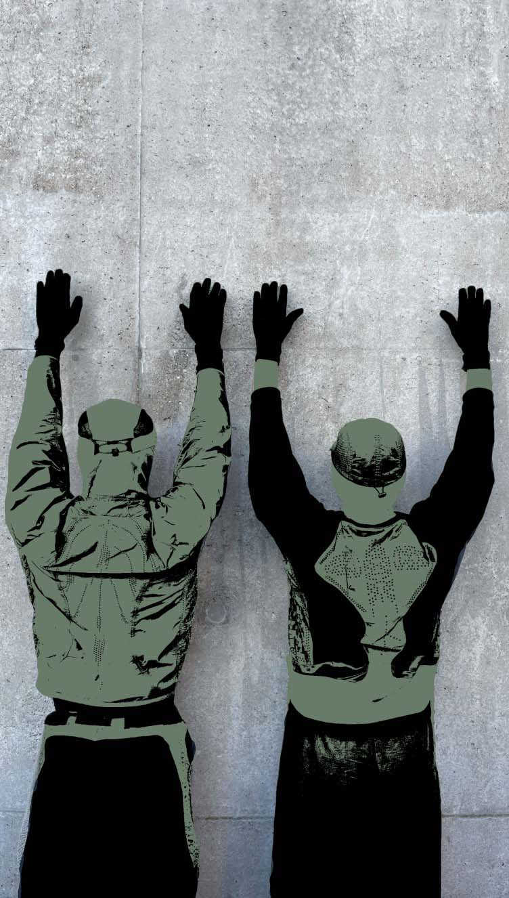

PROJECT: Intervention
Exploring the possibilities with a laser cutting machine. While having a new discourse with this machine I was able to control and customise the use and the settings of it for a new purpose. Using a nylon textile allowed me to create unique ventilated gussets by designing intricate patterns.
VISION:
To me this research allowed me to create unique clothing with forms of function and aesthetic. My goal was to create a breathable jacket which could be used for performance as well as casual use by implementing and taking inspiration from leaves, cells and natural flow of body- pattern, shape and final details such as stitching.

